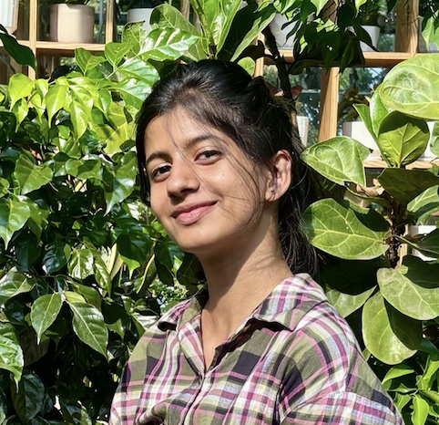

Anannya R Nair

Summary
Engineering student skilled in C, Python, Linux, and UI/UX tools like Figma and Webflow. Quick learner with hands-on experience in team projects, hackathons, and problem-solving.
Education
- BTech in Computer Science with Cybersecurity
Amal Jyothi College of Engineering
2024-2028
Workshops and Achievements
-
Workshops
- Cybersecurity Fundamentals – IBM SkillsBuild
- Digital Forensics – IIIT Kottayam
- UI/UX workshop - ACM AJCE
-
Certifications
- Complete Web Development Bootcamp – Udemy
- Figma to Webflow to Freelancing – Udemy (UI/UX & Freelancing)
Skills
- Programming Languages: C, Python, HTML, Java
- Soft Skills: Teamwork, Problem-Solving, Communication, Quick Learning